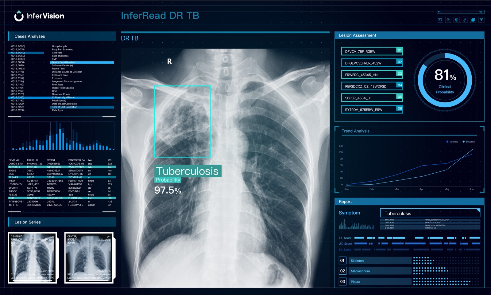
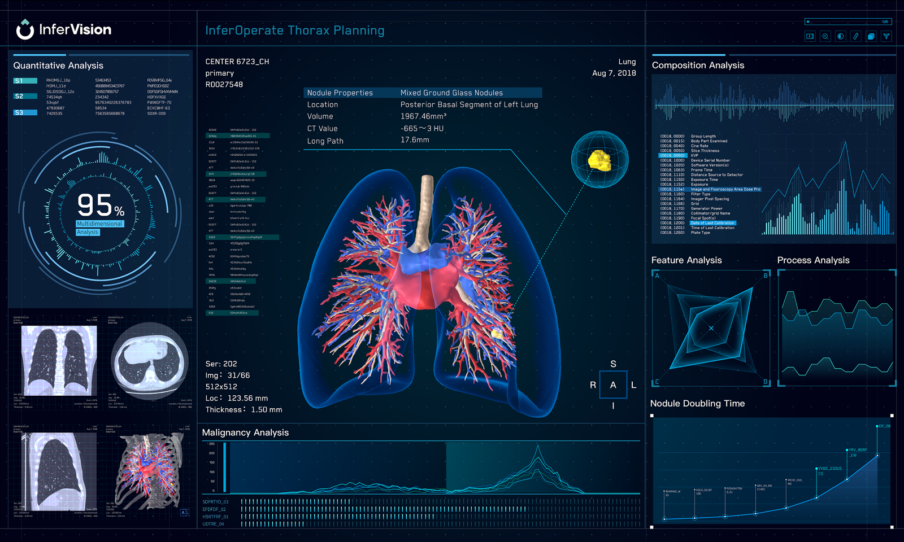

AI that moves real industries forward.
SCOVION connects trusted AI products and practical implementation for the teams shaping healthier, smarter and more resilient futures.
An intelligence ecosystem for the real world
Focused product lines, designed around the people and outcomes that matter.
Technology ready for real workflows
A closer look at selected solutions across screening, surgery and clinical operations.

DR Chest
AI-assisted chest X-ray analysis for rapid tuberculosis screening across stationary, portable and ultra-portable systems.
Explore solution →
Thorax Planning
Automated 3D reconstruction of lung anatomy for preoperative planning and intraoperative visualisation.
Explore solution →Medical AI Agent
A locally deployed multimodal appliance for clinical documentation, quality control, decision support and health screening.
View details →Technology is only the beginning.
Discover
Clarify the problem, workflow and desired outcome.
Design
Match the right product and deployment approach to the setting.
Deliver
Support adoption so technology earns its place every day.